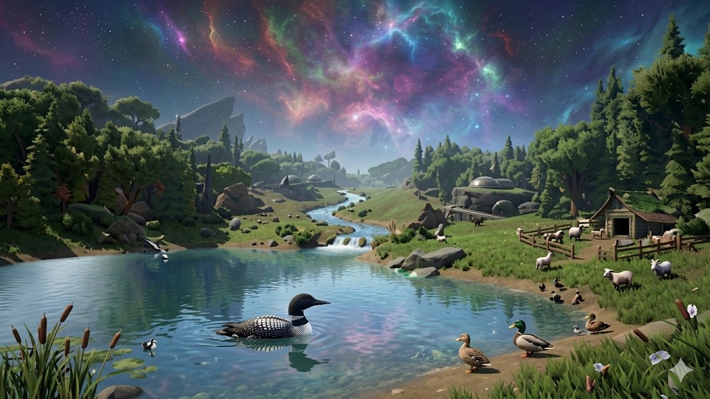

L'immersion totale
Aucun menu, aucune interface. Juste vous, vos gestes, et la nature. Apprenez par l'observation pure et devenez un habitant éclairé de ce monde vivant.
Kios est une expérience de simulation pure, sans menu ni interface, où votre connexion à la nature est directe. Agissez sur l'équilibre d'un monde vivant qui évolue selon ses propres cycles biologiques. Ici, aucune barre de progression : votre savoir est votre seule limite.
Démo bientôt disponible
Aucun menu, aucune interface. Juste vous, vos gestes, et la nature. Apprenez par l'observation pure et devenez un habitant éclairé de ce monde vivant.
Kios n'est pas un système rigide, c'est un écosystème qui respire. L'équilibre biologique suit ses propres lois, des cycles climatiques à l'évolution des espèces, indépendamment du joueur.
Il n'y a pas de niveaux ou de points d'expérience artificiels. Votre progression est votre savoir acquis. Chaque technique, chaque réflexe de survie devient une part de vous-même.
Partagez vos impressions sur la vision de Kios. Aucune inscription requise — la parole est à vous.